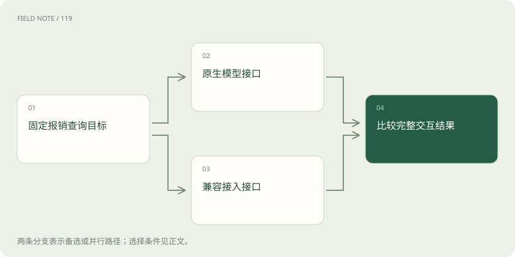
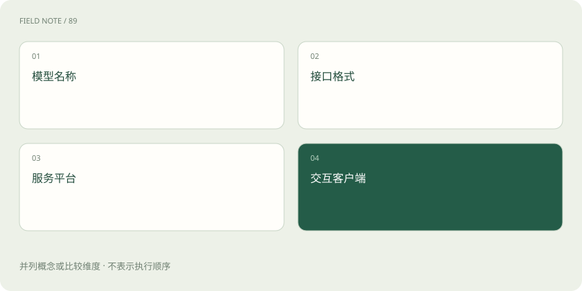

先说这篇在讲什么
你把同一句问题交给不同厂商的软件接口，为什么不能总是只换一个地址就接着用？因为它们对问题、图片、工具和返回结果的组织方式可能不同。这篇先把模型、产品、接口和云平台分开，让你知道接线时究竟在比较哪一层，而不急着记字段。
先看一个具体例子
让三家服务完成同一次发票状态查询，分别记录图片输入、工具编号、权限验证与最终结果。
遇到陌生概念，可以先读
打个比方，帮助理解
这是帮助理解的比方，实际过程以正文说明为准。
一图看懂
先看一次实际请求
用户问“这张发票能报销吗”，应用要把图片和问题发给模型，再把回答放到页面。API 就是应用与服务交换材料的入口和写法。平常说的“协议”有时只指字段，有时还包括身份验证、逐段返回和工具处理，范围并不总相同。比较两家服务时，先写清楚请求发到哪里、材料怎么装、回答怎么读。它们多数是厂商定义的接口，不能因为大家都用就称作统一开放标准。
模型名称和接口名称分开看
同一位报销助手可以在不同平台提供服务，就像同一家店既有柜台也有配送入口。模型是负责理解和生成内容的能力，接口是递交材料的办法。记录 model 时是在选模型，记录端点时是在选服务地址；还要记下版本、区域和已验证功能。名字一样不能保证图片、工具或输出格式都一样。迁移时如果原来需要读发票图片，就要实际确认新入口能接收图片，不能删掉图片后只测一句问候。
OpenAI 的两种装法
聊天机器人说“你好”时，两种入口都可能给出文字，但包装不同。Chat Completions 把对话放进 messages，回答通常从 choices 里的消息读取；Responses 把材料放进 input，再用 output 中不同类型的项目表达文字和工具请求。SDK 是帮助程序调用接口的工具包，它的便捷属性不一定是原始返回字段。Chat Completions 仍受支持，新项目推荐 Responses；具体功能仍要核对模型，迁移不能只换地址。
图解：同一业务的两种模型通路

其他厂商也有自己的材料袋
把发票交给 Anthropic 时，Messages 指它的一套特定接口，并非任何叫 messages 的字段。它把文字和工具等分成内容块。Gemini 的 generateContent 用 contents 和 parts 装输入，用 candidates 装候选回答。Gemini 还有以交互步骤组织任务的 Interactions API：截至核验日期已正式可用并推荐新项目，generateContent 仍完整支持。阅读示例先认清接口名称，避免把一种接口里的字段搬到另一种；也别只读第一块文字而漏掉工具请求。
云平台还要核对通行证
同样查询报销规则，发到云平台的请求可能先因权限或区域不对被拦住。鉴权就是服务确认“你是谁、能用什么”的过程。Bedrock 是服务平台，Converse、Invoke 和兼容接口是不同路线，支持情况还取决于模型、区域和端点。Azure OpenAI 也要核对资源、部署和 API 版本。密钥能用并不证明字段全兼容，字段写对也不证明有访问权限；接入记录应分别说明身份、地址和格式。
Kiro 是接线中的哪一站
在编辑器里让 Kiro 帮忙查项目时，编辑器连接的是一个代理产品。代理可以安排模型与工具合作，不能直接把 Kiro 当成另一种模型请求格式。ACP 用于把编辑器或应用接到 Kiro 代理，MCP 用于连接代理与工具，代理内部如何调用模型又是另一层。某网关若写着“Kiro 适配”，还应查看它依据的公开文档和版本，分清官方支持与社区实现，不能把标签或内部字段当成官方规范。
兼容要问具体兼容什么
报销助手能在新服务上回答“你好”，只证明简单文字请求通了。OpenAI-compatible 通常意味着可以复用部分请求结构或工具包用法，不代表所有角色、参数、图片和工具流程都相同。有的兼容服务会忽略部分参数或限制功能，Anthropic 官方兼容说明也列出了这类情况。Gemini、DeepSeek、阿里云 Model Studio 各有自己的兼容范围。应逐项测试业务必需的功能；限制不能生效时要明确说明，不能悄悄删掉限制再声称迁移成功。
图解：四个容易混淆的名字

沿同一个例子逐步比较
拿“读发票、查状态、解释结果”做对照，比背字段更容易。先看图片怎样进入请求，再看模型怎样提出查询，接着看应用怎样执行并回传，最后看回答何时结束。每一步都记录由谁操作、用哪个编号对应、失败时返回什么。模型生成结束后，还要核对报销服务的真实结果与数据时间。这份地图帮助定位文档，不代替实际测试；所用模型、端点与核验日期都需要保留，本例没有调用真实服务。
放在一起对比
| 层次 | 例子 | 主要核对对象 |
|---|---|---|
| 模型服务接口 | Chat / Responses / Messages | 输入输出、工具、事件与状态 |
| 模型平台 | Bedrock / Azure OpenAI | 端点、部署、鉴权与模型能力 |
| 产品与客户端 | Kiro | 代理接入与产品边界 |
| 代理与工具协议 | ACP / MCP / A2A | 交谈双方、任务与权限范围 |
读完先记住这一句
别踩这个误区
想一想
为什么换成另一家服务后，原来的工具查询可能失效？
因为工具定义、调用标识和回传方式可能不同，要核对整轮流程才能确认兼容。
关联阅读
资料与边界
本文为原创知识讲解。类比和图示经过简化；示例数字不代表实测或报价。整理日期：2026-11-05。文末列出对应技术的原始资料，具体功能与版本支持请以原文为准。
按完整目录逐篇阅读